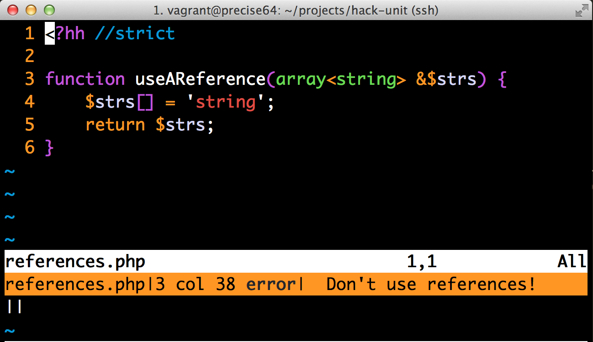

By Brian Scaturro / @scaturr
Hack is a language for HHVM that interoperates seamlessly with PHP. The goal of Hack is to offer developers a way to write cleaner, safer and refactorable code while trying to maintain a level of compatibility with current PHP codebases.
The type checker is your best line of defense. However, the runtime will allow things the type checker does not approve of.

The type checker is invoked by using the hh_client executable that installs with hack. This executable is currently only available on *nix platforms.
hh_client will search for types based on the location of a .hhconfig file. It is an empty file. Be sure to include this in the root of your projects.
Type annotations allow for PHP code to be explicitly typed on parameters, class member variables and return values (types are inferred for locals). These annotated types are checked via a type checker.
<?hh //strict
function sum(int x, int y): int {
return x + y;
}
<?hh //strict
class TestResult
{
protected int $runCount;
protected array<Failure> $failures;
}
<?hh //strict
function invoke((function(int $x): int) $fn): int {
return $fn(1);
}
<?hh //strict
class FluentObject
{
public function doThing(): this
{
//do something
return $this;
}
}
https://github.com/HackPack/HackUnit/blob/bug-broken-this-annotation/Runner/Options.php
<?hh //strict
namespace HackPack\HackUnit\Runner;
class Options
{
protected string $testPath;
/**
* Use Options type since "this" annotation is broken
* when namespaces are used
*/
public function setTestPath(string $testPath): Options
{
$this->testPath;
return $this;
}
}
The hack type checker has some pretty interesting ways of handling the "mixed" type that many PHP programmers are familiar with. The type checker will give you a pass on it if it sees you are validating the type.
<?hh
function sum(mixed $x): void {
if (is_array($x) || $x instanceof Vector) {
$s = 0;
foreach ($x as $v) {
$s += $v;
}
return $s;
}
//... do something else or throw an exception...
}
http://docs.hhvm.com/manual/en/hack.annotations.mixedtypes.php
PHP 5.5 introduced some features that programmers in other languages have been enjoying for years: generators and coroutines. Hack has given types to both of these.
<?hh //strict
function infiniteIterator(): Continuation<int> {
$i = 0;
while (true) {
yield ++$i;
}
}
<?hh
async function f(): Awaitable<int> {
return 42;
}
async function g(): Awaitable<string> {
$f = await f();
$f++;
return 'hi test ' . $f;
}
http://docs.hhvm.com/manual/en/hack.annotations.generators.php
Hack has various levels of tolerance for it's type checker. These are known as modes, and they are triggered by comments.
For the pure of heart. Everything must be annotated and everything is type checked. Strict code cannot call into non hack code.
<?hh //strict
class TestCase
{
public function __construct(protected string $name)
{
}
public function setUp(): void
{
}
public function expect<T>(T $context): Expectation<T>
{
return new Expectation($context);
}
}
It is worth noting that top level code cannot exist in strict mode. This makes it impossible to execute a purely strict program (there is no "main" method). Partial or UNSAFE must be used as strict entry points.
Strict mode will throw "Unbound name" errors when it can't find a corresponding type (including functions). Out of the box, this also includes native PHP functions! You can imagine how frustrating this would be everytime you reach for your favorite PHP function.
hhi files contain interfaces for most of the PHP core library. These files basically provide type information to hack's type checker. You only have to make sure they are on the path of the type checker. After install, these are found at /usr/share/hhvm/hack/hhi. Just copy them to your project's directory and you should be good.
Partial mode is the default of Hack. In partial mode, the type checker checks all types other than that encompassed by an // UNSAFE comment. Partial mode also allows for the partially typing of a class, method or function (e.g., only type a subset of its arguments). And, also unlike strict mode, partial mode allows engineers to call code that has not yet been "Hack-ified" (in other words, they can call into untyped code).
Since strict mode does not allow top level code, partial mode is the method for program entry.
https://github.com/HackPack/HackUnit/blob/master/bin/hackunit
Decl mode is used to allow hack code written in strict mode to call into legacy code, without having to fix the issues that would be pointed out by partial mode. The type checker will "absorb" the signatures of the code, but will not type check the code. Decl is mainly used when annotating old, existing APIs (i.e., when the code does note meet Hack's stricter subset of PHP).
// UNSAFE disables the type checker from the point of unsafe declaration until the end of the current block of code (where the end of the current block generally refers to the associated ending brace (}) of which the // UNSAFE is declared).
https://github.com/HackPack/HackUnit/blob/master/Runner/Loading/StandardLoader.php#L98
Hack introduces generics to PHP (in the same vein as statically type languages such as C# and Java). Generics allow classes and methods to be parameterized (i.e., a type associated when a class is instantiated or a method is called).
The benefit of course being: generics can be statically checked.
<?hh //strict
namespace HackPack\Hacktions;
trait EventEmitter
{
protected Map<string, Vector<(function(...): void)>> $listeners = Map {};
}
The type checker can easily catch these sort of type constraints, and our program design is better for them.
While hack generics are useful type annotations, they are nowhere near as useful as generics in Java/C#.
This mainly stems from hack's preference for inference and the fact that a type is not a concrete thing in hack.
The preference for inference seems like a blow to readability. The following results in a type error:
$fun = () ==> { $fn = $this->callable; $fn(); }
$this->expectCallable($fun)->toThrow<ExpectationException>();
//Tests/Core/CallableExpectationTest.php|54 col 70 error| This operator is not associative, add parentheses
$fun = () ==> { $fn = $this->callable; $fn();};
$this->expectCallable($fun)->toThrow('\HackPack\HackUnit\Core\ExpectationException');
This snippet also demonstrates we haven't left the "magic string" pattern of PHP. Types are not concrete things in hack - we still have to check types against strings.
Generics are not as useful in hack because they don't stack. What I mean by stack is explained by the following from the docs:
A generic method must not collide with any existing, non-generic method name (i.e, public function swap and public function swap).
<?hh //strict
class Cook
{
use Subject<Waiter>;
use Subject<Busboy>;
}
//throws type errors
Generics are really useful design tools. Their presence in hack is a welcome addition that is not present in vanilla PHP. However, they are not as useful as they are in other languages.
Hack introduces a safer way to deal with nulls through a concept known as the "Nullable" type. Nullable allows any type to have null assigned and checked on it.
<?hh //strict
class Options
{
protected ?string $hackUnitFile;
public function getHackUnitFile(): ?string
{
$path = (string) getcwd() . '/Hackunit.php';
if (! is_null($this->hackUnitFile)) {
$path = $this->hackUnitFile;
}
$path = realpath($path);
return $path ?: null;
}
}
The following results in a type error:
<?hh //strict
class TestResult
{
protected ?float $startTime;
public function getTime(): ?float
{
$time = null;
$startTime = $this->startTime;
$time = microtime(true) - $startTime;
return $time;
}
//TestResult.php|39 col 35 error| Typing error
//TestResult.php|39 col 35 error| This is a num (int/float) because this is used in an arithmetic operation
//TestResult.php|13 col 15 error| It is incompatible with a nullable type
}
<?hh //strict
class TestResult
{
public function getTime(): ?float
{
$time = null;
$startTime = $this->startTime;
if (!is_null($startTime)) {
$time = microtime(true) - $startTime;
}
return $time;
}
}
Nullable allows you to be explicit about the possibility of null. This makes code more readable and easier to reason about.
The goals of Hack collections are four-fold:
A Vector is an integer-indexed (zero-based) collection with similar semantics to a C++ vector or a C#/Java ArrayList. Random access to elements happen in O(1) time. Inserts occur at O(1) when added to the end, but could hit O(n) with inserts elsewhere. Removal has similar time semantics.
https://github.com/HackPack/hacktions/blob/master/Subject.php
A Map is an ordered dictionary-style collection. Elements are stored as key/value pairs. Maps retain element insertion order, meaning that iterating over a Map will visit the elements in the same order that they were inserted. Insert, remove and search operations are performed in O(lg n) time or better
https://github.com/HackPack/hacktions/blob/master/EventEmitter.php
Note: Maps only support integer and string keys for now.
A Set is an ordered collection that stores unique values. Unlike vectors and maps, sets do not have keys, and thus cannot be iterated on keys.
Note: Sets only support integer and string values for now.
A Pair is an indexed container restricted to containing exactly two elements. Pair has integer keys; key 0 refers to the first element and key 1 refers to the second element (all other integer keys are out of bounds).
Most hack collections have immutable variants - i.e ImmVector. Immutable variants function like their mutable counterparts with the exception that items cannot be added or removed.
Collections are now the preferred method of storing things. Arrays are still allowed, but they must be used in a new way to conform to the type checker.
Since PHP does not have the concept of a structs or records, arrays are many times used to mimic a struct or record-like entity . Arrays are also used as "argument bags" to hold a bunch of arguments that will be passed to a function or method. Shapes were created to bring some structure (no pun intended) and type-checking sanity to this use case.
https://github.com/HackPack/HackUnit/blob/master/Error/TraceParser.php
Many programming languages allow existing types to be redefined as new type names. The C language has typedefs. OCaml has type abbreviations. PHP even has rudimentary mechanism with its function class_alias() function. Hack and HHVM are offering two ways to redefine type names: type aliasing and opaque type aliasing.
<?hh //strict
type Origin = shape(
'method' => string,
'message' => string,
'location' => string
);
<?hh //strict
newtype Location = shape(
'file' => string,
'line' => int
);
Opaque type aliases work like their non-opaque counterpart with the exception that they cannot escape the confines of the file they were defined in.
http://bit.ly/1mDUWwj
<?hh
newtype closedfile = resource;
newtype openfile = resource;
function get_file_handler(string $filename): closedfile {
return some_wrapped_function($filename);
}
function open_file_handler(closedfile $file): openfile {
$file->open();
return $file;
}
function read(openfile $file): string {
return $file->read();
}
Asynchronous programming refers to a programming design pattern that allows several distinct tasks to cooperatively transfer control to one another on a given thread of execution.
Async is not threading. It is cooperative multitasking. Dash those ideas of easily running things in parallel.
While not threading, this is still extremely useful, and it will only get better. See the official example on coalesced fetching.